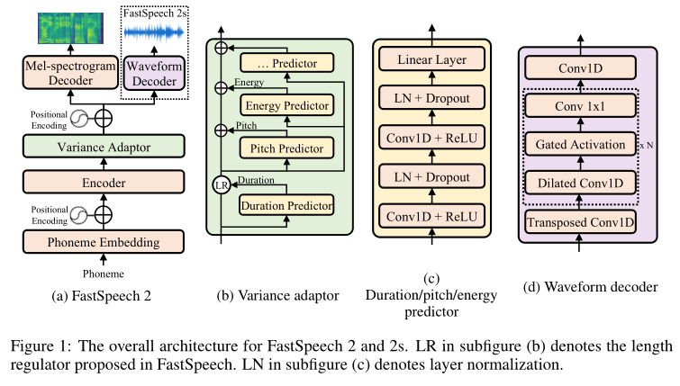

FastSpeech2¶
基本信息
- 标题: FastSpeech2: Fast and High-Quality End-to-End Text-to-Speech - 作者: - 01 [Yi Ren](../../Authors/Yi_Ren_(任意).md) - 02 [Chenxu Hu](../../Authors/Chenxu_Hu.md) - 03 [Xu Tan](../../Authors/Xu_Tan_(谭旭).md) - 04 [Qin Tao](../../Authors/Tao_Qin_(秦涛).md) - 05 [Sheng Zhao](../../Authors/Sheng_Zhao_(赵胜).md) - 06 [Zhou Zhao](../../Authors/Zhou_Zhao_(赵洲).md) - 07 [Tie-Yan Liu](../../Authors/Tie-yan_Liu_(刘铁岩).md) - 机构: - [浙江大学](../../Institutions/ZJU_浙江大学.md) - [Microsoft](../../Institutions/Microsoft.md) - 时间: - 预印时间: 2020.06.08 ArXiv v1 - 预印时间: 2020.06.09 ArXiv v2 - 预印时间: 2020.06.22 ArXiv v3 - 预印时间: 2020.10.16 ArXiv v4 - 预印时间: 2021.03.03 ArXiv v5 - 预印时间: 2021.03.04 ArXiv v6 - 预印时间: 2021.08.05 ArXiv v7 - 预印时间: 2020.08.08 ArXiv v8 - 更新笔记: 2024.06.17 - 发表: - [ICLR 2021](../../Publications/ICLR.md) - 链接: - [ArXiv](https://arxiv.org/abs/2006.04558) - [DOI](https://openreview.net/forum?id=piLPYqxtWuA) - [Github]() - [Demo](https://speechresearch.github.io/fastspeech2/) - [Scholar](https://scholar.google.com/scholar?cluster=13060237915382152145) - 标签: - [语音合成](../../Tags/SpeechSynthesis.md) - 页数: 15 - 引用: ? - 被引: 1225 - 数据: - [LJSpeech](../../Datasets/2017.07.05_LJSpeech.md) - 对比: - [Tacotron2](../../Models/TTS2_Acoustic/2017.12.16_Tacotron2.md) + [Parallel WaveGAN](../../Models/TTS3_Vocoder/2019.10.25_Parallel_WaveGAN.md); - [Transformer TTS](../../Models/TTS2_Acoustic/2018.09.19_Transformer_TTS.md) + [Parallel WaveGAN](../../Models/TTS3_Vocoder/2019.10.25_Parallel_WaveGAN.md); - [FastSpeech](../../Models/TTS2_Acoustic/2019.05.22_FastSpeech.md) + [Parallel WaveGAN](../../Models/TTS3_Vocoder/2019.10.25_Parallel_WaveGAN.md); - 复现: - 2020.06.25 [ming024/FastSpeech2](https://github.com/ming024/FastSpeech2) 论文 v1 版本 - 2023.11.28 [open-mmlab/Amphion](https://github.com/open-mmlab/Amphion/tree/main/models/tts/fastspeech2)Abstract: 摘要¶
Non-autoregressive text to speech (TTS) models such as FastSpeech can synthesize speech significantly faster than previous autoregressive models with comparable quality. The training of FastSpeech model relies on an autoregressive teacher model for duration prediction (to provide more information as input) and knowledge distillation (to simplify the data distribution in output), which can ease the one-to-many mapping problem (i.e., multiple speech variations correspond to the same text) in TTS. However, FastSpeech has several disadvantages: 1) the teacher-student distillation pipeline is complicated and time-consuming, 2) the duration extracted from the teacher model is not accurate enough, and the target mel-spectrograms distilled from teacher model suffer from information loss due to data simplification, both of which limit the voice quality. In this paper, we propose FastSpeech2, which addresses the issues in FastSpeech and better solves the one-to-many mapping problem in TTS by 1) directly training the model with ground-truth target instead of the simplified output from teacher, and 2) introducing more variation information of speech (e.g., pitch, energy and more accurate duration) as conditional inputs. Specifically, we extract duration, pitch and energy from speech waveform and directly take them as conditional inputs in training and use predicted values in inference. We further design FastSpeech2s, which is the first attempt to directly generate speech waveform from text in parallel, enjoying the benefit of fully end-to-end inference. Experimental results show that 1) FastSpeech2 achieves a 3x training speed-up over FastSpeech, and FastSpeech2s enjoys even faster inference speed; 2) FastSpeech2 and FastSpeech2s outperform FastSpeech in voice quality, and FastSpeech2 can even surpass autoregressive models. Audio samples are available at https://speechresearch.github.io/fastspeech2/.
1.Introduction: 引言¶
Neural network based text to speech (TTS) has made rapid progress and attracted a lot of attention in the machine learning and speech community in recent years (Tacotron; Tacotron2,DBLSTM; DeepVoice; DeepVoice3; FastSpeech; Transformer TTS). Previous neural TTS models (Tacotron; Tacotron2; DeepVoice3; Transformer TTS) first generate mel-spectrograms autoregressively from text and then synthesize speech from the generated mel-spectrograms using a separately trained vocoder (WaveNet; Parallel WaveNet,WaveGlow,FloWaveNet,Parallel WaveGAN,MelGAN). They usually suffer from slow inference speed and robustness (word skipping and repeating) issues (FastSpeech; MultiSpeech). In recent years, non-autoregressive TTS models (FastSpeech; FastPitch; Glow-TTS; JDI-T; Flow-TTS; ParaNet) are designed to address these issues, which generate mel-spectrograms with extremely fast speed and avoid robustness issues, while achieving comparable voice quality with previous autoregressive models.
Among those non-autoregressive TTS methods, FastSpeech is one of the most successful models. FastSpeech designs two ways to alleviate the one-to-many mapping problem: 1) Reducing data variance in the target side by using the generated mel-spectrogram from an autoregressive teacher model as the training target (i.e., knowledge distillation). 2) Introducing the duration information (extracted from the attention map of the teacher model) to expand the text sequence to match the length of the mel-spectrogram sequence.
While these designs in FastSpeech ease the learning of the one-to-many mapping problem (see Section: Motivation) in TTS, they also bring several disadvantages: 1) The two-stage teacher-student training pipeline makes the training process complicated. 2) The target mel-spectrograms generated from the teacher model have some information loss (The speech generated by the teacher model loses some variation information about pitch, energy, prosody, etc., and is much simpler and less diverse than the original recording in the training data.) compared with the ground-truth ones, since the quality of the audio synthesized from the generated mel-spectrograms is usually worse than that from the ground-truth ones. 3) The duration extracted from the attention map of teacher model is not accurate enough.
In this work, we propose FastSpeech2 to address the issues in FastSpeech and better handle the one-to-many mapping problem in non-autoregressive TTS. To simplify the training pipeline and avoid the information loss due to data simplification in teacher-student distillation, we directly train the FastSpeech2 model with ground-truth target instead of the simplified output from a teacher. To reduce the information gap (input does not contain all the information to predict the target) between the input (text sequence) and target output (mel-spectrograms) and alleviate the one-to-many mapping problem for non-autoregressive TTS model training, we introduce some variation information of speech including pitch, energy and more accurate duration into FastSpeech: in training, we extract duration, pitch and energy from the target speech waveform and directly take them as conditional inputs; in inference, we use values predicted by the predictors that are jointly trained with the FastSpeech2 model. Considering the pitch is important for the prosody of speech and is also difficult to predict due to the large fluctuations along time, we convert the pitch contour into pitch spectrogram using continuous wavelet transform and predict the pitch in the frequency domain, which can improve the accuracy of predicted pitch. To further simplify the speech synthesis pipeline, we introduce FastSpeech2s, which does not use mel-spectrograms as intermediate output and directly generates speech waveform from text in inference, enjoying low latency in inference.
Experiments on the LJSpeech dataset show that 1) FastSpeech2 enjoys much simpler training pipeline (3x training time reduction) than FastSpeech while inherits its advantages of fast, robust and controllable (even more controllable in pitch and energy) speech synthesis, and FastSpeech2s enjoys even faster inference speed; 2) FastSpeech2 and FastSpeech2s outperform FastSpeech in voice quality, and FastSpeech2 can even surpass autoregressive models.
We attach audio samples generated by FastSpeech2 and FastSpeech2s at https://speechresearch.github.io/fastspeech2/.
The main contributions of this work are summarized as follows:
- FastSpeech2 achieves a 3x training speed-up over FastSpeech by simplifying the training pipeline.
- FastSpeech2 alleviates the one-to-many mapping problem in TTS and achieves better voice quality.
- FastSpeech2s further simplifies the inference pipeline for speech synthesis while maintaining high voice quality, by directly generating speech waveform from text.
2.Related Works: 相关工作¶
None
3.Methodology: 方法¶
原文
> In this section, we first describe the motivation of the design in ***FastSpeech2***, and then introduce the architecture of ***FastSpeech2***, which aims to improve [FastSpeech](../../Models/TTS2_Acoustic/2019.05.22_FastSpeech.md) to better handle the one-to-many mapping problem, with simpler training pipeline and higher voice quality. > At last, we extend ***FastSpeech2*** to ***FastSpeech2s*** for fully end-to-end text-to-waveform synthesis. > (In this work, text-to-waveform refers to phoneme-to-waveform, while our method can also be applied to character-level sequence directly.)本节首先描述 FastSpeech2 的设计动机, 然后介绍 FastSpeech2 的网络架构, 用于改进 FastSpeech 以更好地处理一对多映射问题, 简化训练过程并提高声音质量. 最后, 我们将 FastSpeech2 扩展到 FastSpeech2s 以实现完全端到端的文本到音频合成. (本项工作中, 文本转波形指的是音素转波形, 虽然我们的方法也能够直接应用到字符级序列.)
3.1.Motivation: 动机¶
原文
> TTS is a typical one-to-many mapping problem ([Tacotron](../../Models/TTS2_Acoustic/2017.03.29_Tacotron.md); [BicycleGAN](../../Models/_Basis/BicycleGAN.md),jayne2012one,gadermayr2020asymetric, [AdaSpeech](../../Models/TTS2_Acoustic/2021.03.01_AdaSpeech.md)), since multiple possible speech sequences can correspond to a text sequence due to variations in speech, such as pitch, duration, sound volume and prosody. > In non-autoregressive TTS, the only input information is text which is not enough to fully predict the variance in speech. > In this case, the model is prone to overfit to the variations of the target speech in the training set, resulting in poor generalization ability. > > As mentioned in [Introduction](#id_introduction), although [FastSpeech](../../Models/TTS2_Acoustic/2019.05.22_FastSpeech.md) designs two ways to alleviate the one-to-many mapping problem, they also bring about several issues including > 1) the complicated training pipeline; > 2) information loss of target mel-spectrogram as analyzed in Table \ref{tab:main_results}; and > 3) not accurate enough ground-truth duration as shown in Table \ref{tab:align_acc}. > > In the following subsection, we introduce the detailed design of ***FastSpeech2*** which aims to address these issues.文本转语音是一个经典的一对多映射问题, 一个文本序列由于语音的变化 (如音高, 时长, 音量, 韵律) 可以对应多个可能的语音序列. 在非自回归文本转语音中, 仅有的输入信息是文本, 不足以完整预测语音中的变化. 在这种情况下, 模型倾向于过拟合于训练集中的目标语音, 从而缺乏泛化能力.
正如第一节所言, 尽管 FastSpeech 设计了两种方法来缓解一对多映射问题, 但也带来了一些问题, 包括: 1. 复杂的训练管道; 2. 表格 \ref{tab:main_results} 中所述的目标梅尔频谱信息丢失; 3. 表格 \ref{tab:align_acc} 中所述的不够准确的音素时长.
在下面的小节中, 我们介绍 FastSpeech2 的详细设计, 旨在解决这些问题.
3.2.Model Overview: 模型概览¶
原文
> The overall model architecture of ***FastSpeech2*** is shown in Figure.01. > The encoder converts the phoneme embedding sequence into the phoneme hidden sequence, and then the variance adaptor adds different variance information such as duration, pitch and energy into the hidden sequence, finally the mel-spectrogram decoder converts the adapted hidden sequence into mel-spectrogram sequence in parallel. > We use the feed-forward Transformer block, which is a stack of [self-attention](../_Transformer/2017.06.12_Transformer.md) layer and 1D-convolution as in [FastSpeech](../../Models/TTS2_Acoustic/2019.05.22_FastSpeech.md), as the basic structure for the encoder and mel-spectrogram decoder. > Different from [FastSpeech](../../Models/TTS2_Acoustic/2019.05.22_FastSpeech.md) that relies on a teacher-student distillation pipeline and the phoneme duration from a teacher model, ***FastSpeech2*** makes several improvements. > > First, we remove the teacher-student distillation pipeline, and directly use ground-truth mel-spectrograms as target for model training, which can avoid the information loss in distilled mel-spectrograms and increase the upper bound of the voice quality. > > Second, our variance adaptor consists of not only duration predictor but also pitch and energy predictors, where > 1) the duration predictor uses the phoneme duration obtained by forced alignment ([MFA](../../Models/Tricks/Montreal_Forced_Aligner.md)) as training target, which is more accurate than that extracted from the attention map of autoregressive teacher model as verified experimentally in Section~\ref{sec:analyses_var}; > 2) the additional pitch and energy predictors can provide more variance information, which is important to ease the one-to-many mapping problem in TTS. > > Third, to further simplify the training pipeline and push it towards a fully end-to-end system, we propose ***FastSpeech2s***, which directly generates waveform from text, without cascaded mel-spectrogram generation (acoustic model) and wavefor
FastSpeech2 的整体模型架构如图 01 所示.
编码器将音素嵌入序列转化到音素隐藏序列, 然后变化适配器添加不同的变化信息例如时长, 音高和能量到隐藏序列中, 最后梅尔频谱解码器将修改后的隐藏序列以并行的方式转化为梅尔频谱序列. 我们使用前馈 Transformer 块 (自注意力层和 1D 卷积的堆叠) 作为编码器和梅尔频谱解码器的基础结构. 和 FastSpeech 依赖于教师-学生蒸馏管道和来自教师模型的音素时长, FastSpeech2 做了几点改进.
首先, 我们移除了教师-学生蒸馏管道, 直接使用真实梅尔频谱作为模型训练的目标, 这可以避免蒸馏后的梅尔频谱的信息损失并提高声音质量的上限.
其次, 我们的变化适配器不仅由时长预测器组成, 还有音高预测器和能量预测器: 1. 时长预测器使用强制对齐获得的音素时长作为训练目标, 这比从自回归教师模型的注意力图中提取的要更加精确, 这经过实验验证; 2. 另外的音高和能量预测器可以提供更多的变化信息, 这对于缓解文本转语音的一对多映射问题很重要;
第三, 为了进一步简化训练管道并将其推广到完全端到端系统, 我们提出了 FastSpeech2s, 它直接从文本生成音频, 而不需要级联的梅尔频谱生成 (声学模型) 和音频生成 (声码器).
在后续小节中, 我们描述变化适配器和直接波形生成的详细设计.
内容补充:
编码器: Transformer.Encoder 解码器: Transformer.Decoder 后处理网络: PostNet 梅尔线性层: Linear(decoder_hidden, n_mel)
3.3.Variance Adaptor: 变化适配器¶
原文
> The variance adaptor aims to add variance information (e.g., duration, pitch, energy, etc.) to the phoneme hidden sequence, which can provide enough information to predict variant speech for the one-to-many mapping problem in TTS. > We briefly introduce the variance information as follows: > 1) phoneme duration, which represents how long the speech voice sounds; > 2) pitch, which is a key feature to convey emotions and greatly affects the speech prosody; > 3) energy, which indicates frame-level magnitude of mel-spectrograms and directly affects the volume and prosody of speech. > > More variance information can be added in the variance adaptor, such as emotion, style and speaker, and we leave it for future work. > Correspondingly, the variance adaptor consists of > 1) a duration predictor (i.e., the length regulator, as used in [FastSpeech](../../Models/TTS2_Acoustic/2019.05.22_FastSpeech.md)), > 2) a pitch predictor, > 3) an energy predictor, as shown in Figure.02. > > In training, we take the ground-truth value of duration, pitch and energy extracted from the recordings as input into the hidden sequence to predict the target speech. > At the same time, we use the ground-truth duration, pitch and energy as targets to train the duration, pitch and energy predictors, which are used in inference to synthesize target speech. > As shown in Figure \ref{fig:arch_3}, the duration, pitch and energy predictors share similar model structure (but different model parameters), which consists of a 2-layer 1D-convolutional network with ReLU activation, each followed by the layer normalization and the dropout layer, and an extra linear layer to project the hidden states into the output sequence. > In the following paragraphs, we describe the details of the three predictors respectively.变化适配器 (Variance Adapter) 的目的是给音素隐藏序列添加变化信息 (如时长, 音高, 能量等等), 从而提供足够的信息以预测变化语音, 缓解文本转语音中一对多映射问题. 我们简要介绍变化信息如下: 1. 音素时长, 表示语音声音的时长; 2. 音高, 是一个重要的特征, 能传达情感并大大影响语音的韵律; 3. 能量, 表示梅尔频谱帧级别的强度, 直接影响语音的音量和韵律.
更多的变化信息可以添加到变化适配器中, 如情感, 风格和发音人, 我们将之留给未来工作. 相应地, 变化适配器由三个组件构成: 1. 时长预测器 (即长度调节器, 如 FastSpeech 中所用) 2. 音高预测器 3. 能量预测器
在训练时, 我们使用从录音中提取的真实时长, 音高和能量输入到隐藏序列以预测目标音频; 同时将它们作为目标用于训练时长, 音高和能量预测器, 用于在推理时合成目标语音.
如图所示, 时长, 音高和能量预测器共享相似的模型结构, 但使用不同的模型参数, 它们由两层一维卷积网络+ReLU 激活函数+层归一化+随机失活层+额外线性层将隐藏状态映射到输出序列. 在下面的段落中, 我们分别描述这三个预测器.
内容补充:
对于每个组件都服从同一个架构 VariancePredictor.
数据流: 输入 → [Conv1D 1, ReLU 1, LayerNorm 1, Dropout 1] → [Conv1D 2, ReLU 2, LayerNorm 2, Dropout 2] → Linear → 输出, 将前面两部分组成 self.conv_layer.
self.conv_layer = nn.Sequential(
OrderedDict([
("conv1d_1", Conv1d(in_channels=input_size, out_channels=filter_size, kernel_size=kernel, padding=(kernel-1)//2)),
("relu_1", nn.ReLU()),
("layer_norm_1", nn.LayerNorm(filter_size)),
("dropout_1", nn.Dropout(p=dropout_rate)),
("conv1d_2", Conv1d(in_channels=filter_size, out_channels=filter_size, kernel_size=kernel, padding=1)),
("relu_2", nn.ReLU()),
("layer_norm_2", nn.LayerNorm(filter_size)),
("dropout_2", nn.Dropout(p=dropout_rate)),
])
)
self.linear_layer = nn.Linear(filter_size, 1)
参数设置 filter_size=256, kernel_size=3, dropout_rate=0.5 最后对输出进行 squeeze(1)
根据这一基础预测器构建三个预测器:
- 时长预测器 duration_predictor,
- 音高预测器 pitch_predictor,
- 能量预测器 energy_predictor.
这些预测器可以根据预处理采用的级别 frame_level 和 phoneme_level 进行设置.
由 duration_predictor 输入 x 和 src_mask 输出 log_duration_prediction
如果时长目标不为 None, 直接将时长目标赋值给 duration_rounded; 否则对 log_duration_prediction 指数化后减一四舍五入, 然后乘以 d_control, 裁剪保证时长不小于 0 得到 duration_rounded.
使用 length_regulator 处理, 得到 x 和 mel_len, 然后对 mel_len 使用 get_mask_from_lengths 得到 mel_mask.
对于 pitch_predictor 和 energy_predictor,
- 使用 phoneme_level 时, mask 采用 src_mask;
- 使用 frame_level 时, mask 采用 mel_mask;
输入 x, {}_target, {}_mask, {}_control, 调用 get_{}_embedding() 输出 {}_prediction 和 {}_embedding.
然后残差连接 x+={}_embedding.
先音高后能量.
最后 VarianceAdapter 输出 x, pitch_prediction, energy_prediction, log_duration_prediction, duration_rounded, mel_len, mel_mask.
原文
> #### Duration Predictor > The duration predictor takes the phoneme hidden sequence as input and predicts the duration of each phoneme, which represents how many mel frames correspond to this phoneme, and is converted into logarithmic domain for ease of prediction. > The duration predictor is optimized with mean square error (MSE) loss, taking the extracted duration as training target. > Instead of extracting the phoneme duration using a pre-trained autoregressive TTS model in [FastSpeech](../../Models/TTS2_Acoustic/2019.05.22_FastSpeech.md), we use [Montreal forced alignment (MFA)](../../Models/Tricks/Montreal_Forced_Aligner.md) tool to extract the phoneme duration, in order to improve the alignment accuracy and thus reduce the information gap between the model input and output. > > (MFA is an open-source system for speech-text alignment with good performance, which can be trained on paired text-audio corpus without any manual alignment annotations. > We train MFA on our training set only without other external dataset. > We will work on non-autoregressive TTS without external alignment models in the future.)时长预测器¶
时长预测器使用音素隐藏序列作为输入, 并预测每个音素的时长, 即表示每个音素对应的梅尔帧数, 然后转化为对数域简化预测. 时长预测器使用均方误差损失进行优化, 将提取的时长作为目标值. 和 FastSpeech 使用预训练自回归文本转语音模型提取音素时长不同, 我们使用 Montreal forced alignment (MFA) 工具提取音素时长, 以提高对齐精度并减少模型输入输出之间的信息差距.
MFA 是一款开源的语音-文本对齐系统, 具有良好的性能, 可以在配对的文本-音频语料库上进行训练而无需手工对齐注释. 我们仅在训练集上训练 MFA, 而不使用其他外部数据集. 我们将在未来研究非自回归文本转语音时不使用外部对齐模型.
原文
> #### Pitch Predictor > Previous neural network based TTS systems with pitch prediction ([DeepVoice](../../Models/TTS0_System/2017.02.25_DeepVoice.md); [DeepVoice2](../../Models/TTS0_System/2017.05.24_DeepVoice2.md)) often predict pitch contour directly. > However, due to high variations of ground-truth pitch, the distribution of predicted pitch values is very different from ground-truth distribution, as analyzed in Section~\ref{sec:analyses_var}. > To better predict the variations in pitch contour, we use continuous wavelet transform (CWT) to decompose the continuous pitch series into pitch spectrogram and take the pitch spectrogram as the training target for the pitch predictor which is optimized with MSE loss. > In inference, the pitch predictor predicts the pitch spectrogram, which is further converted back into pitch contour using inverse continuous wavelet transform (iCWT). > We describe the details of pitch extraction, CWT, iCWT and pitch predictor architecture in Appendix~\ref{sec:apx_pitch_plot}. > To take the pitch contour as input in both training and inference, we quantize pitch $F_0$ (ground-truth/predicted value for train/inference respectively) of each frame to 256 possible values in log-scale and further convert it into pitch embedding vector $p$ and add it to the expanded hidden sequence.音高预测器¶
先前带有音高预测的基于神经网络的文本转语音系统通常直接预测音高轮廓. 然而, 由于真实音高的高变化性, 预测的音高值的分布和真实分布非常不同, 如 Section~\ref{sec:analyses_var} 所述. 为了更好地预测音高轮廓的变化, 我们使用连续小波变换将连续音高序列分解为音高谱图, 并且将音高谱图作为音高预测器的训练目标并采用均方损失训练. 在推理时, 音高预测器预测音高谱图, 然后使用逆连续小波变换还原为音高轮廓. 我们在附录~\ref{sec:apx_pitch_plot} 中详细描述了音高提取, 连续小波变换, 逆连续小波变换和音高预测器架构. 为了在训练和推理中都使用音高轮廓作为输入, 我们将音高 $F_0$ (真实/预测值分别用于训练/推理) 离散化为 256 个可能值, 并将其转换为音高嵌入向量 $p$ 并添加到扩展的隐藏序列中.
内容补充:
get_pitch_embedding(): 输入 x, target, mask, control
输入 x 和 mask 使用 pitch_predictor 预测 prediction.
若输入 target 为 None, 则使用 prediction * control 作为目标 target.
输入值改为 torch.bucketize(target, pitch_bins).
调用 pitch_embedding()
输出 precdiction, embedding
pitch_embedding 定义为 nn.Embedding(n_bins, transformer.encoder_hidden)
- 若 pitch_quantization 为对数 log, 则 pitch_bins 根据音高的范围设置 exp(linspace(log(min), log(max), n_bins-1)), 不求梯度.
- 若 pitch_quantization 为线性 linear, 则 pitch_bins 根据音高的范围设置 linspace(min, max, n_bins-1), 不求梯度.
注: 能量预测器和音高预测器基本相同.
注: 此代码主要对应 v3 之前, 与最后发表论文不对应, 因为 v4 才加入了小波变换的处理.
原文
> [!IMPORTANT] > #### Energy Predictor > We compute L2-norm of the amplitude of each short-time Fourier transform (STFT) frame as the energy. > Then we quantize energy of each frame to 256 possible values uniformly, encoded it into energy embedding $e$ and add it to the expanded hidden sequence similarly to pitch. > We use an energy predictor to predict the original values of energy instead of the quantized values and optimize the energy predictor with MSE loss. > (We do not transform energy using CWT since energy is not as highly variable as pitch on LJSpeech dataset, and we do not observe gains when using it.)能量预测器¶
我们计算每个短时傅里叶变换帧的振幅的 L2 范数作为能量. 然后我们将每个帧的能量离散化为 256 个可能值, 并将其编码为能量嵌入 $e$ 并与音高嵌入 $p$ 类似地添加到扩展的隐藏序列中. 我们使用能量预测器来预测原始能量值而不是离散化的值, 并优化能量预测器使用均方误差损失. (由于 LJSpeech 数据集上的能量不像音高那样高度变化, 我们不使用连续小波变换来转换能量, 而且我们没有观察到使用 CWT 带来的收益.)
3.4.FastSpeech2s¶
原文
> To enable fully end-to-end text-to-waveform generation, in this subsection, we extend ***FastSpeech2*** to ***FastSpeech2s***, which directly generates waveform from text, without cascaded mel-spectrogram generation (acoustic model) and waveform generation (vocoder). > As shown in Figure.01, ***FastSpeech2s*** generates waveform conditioning on intermediate hidden, which makes it more compact in inference by discarding mel-spectrogram decoder and achieve comparable performance with a cascaded system. > We first discuss the challenges in non-autoregressive text-to-waveform generation, then describe details of ***FastSpeech2s***, including model structure and training and inference processes.为了实现完全端到端的文本转波形生成, 我们在本小节中扩展了 FastSpeech2 到 FastSpeech2s, 它直接从文本生成波形, 而不需要级联的梅尔频谱图生成 (声学模型) 和 波形生成 (声码器). 如图 1 所示, FastSpeech2s 生成基于中间隐藏状态的波形, 这使得它在推理时更加紧凑, 并与级联系统相比具有可比的性能. 首先, 我们讨论非自回归文本转波形生成的挑战, 然后描述 FastSpeech2s 的详细信息, 包括模型结构, 训练和推理过程.
原文
> #### Challenges in Text-to-Waveform Generation > When pushing TTS pipeline towards fully end-to-end framework, there are several challenges: > 1) Since the waveform contains more variance information (e.g., phase) than mel-spectrograms, the information gap between the input and output is larger than that in text-to-spectrogram generation. > 2) It is difficult to train on the audio clip that corresponds to the full text sequence due to the extremely long waveform samples and limited GPU memory. > > As a result, we can only train on a short audio clip that corresponds to a partial text sequence which makes it hard for the model to capture the relationship among phonemes in different partial text sequences and thus harms the text feature extraction.文本转波形生成的挑战¶
在将文本转语音管道推及到完全端到端框架时有几个挑战: 1. 由于波形比梅尔频谱包含更多变化信息 (如相位), 输入和输出之间的信息鸿沟要比文本转频谱生成更大. 2. 由于相当长波形样本和有限的 GPU 内存, 在完整文本序列对应的短音频片段上训练模型很困难.
因此, 我们只能够在对应部分文字序列的音频样本上训练, 这使得模型很难捕捉不同部分文字序列之间的音素关系, 从而损害了文本特征提取.
原文
> #### Our Method > To tackle the challenges above, we make several designs in the waveform decoder: > 1) Considering that the phase information is difficult to predict using a variance predictor ([DDSP](../../Models/_Basis/2020.01.14_DDSP.md)), we introduce adversarial training in the waveform decoder to force it to implicitly recover the phase information by itself ([Parallel WaveGAN](../../Models/TTS3_Vocoder/2019.10.25_Parallel_WaveGAN.md)). > 2) We leverage the mel-spectrogram decoder of ***FastSpeech2***, which is trained on the full text sequence to help on the text feature extraction. > > As shown in Figure \ref{fig:arch_4}, the waveform decoder is based on the structure of [WaveNet](../../Models/TTS3_Vocoder/2016.09.12_WaveNet.md) including non-causal convolutions and gated activation ([Gated PixelCNN](../../Models/_Basis/2016.06.16_Gated_PixelCNN.md)). > The waveform decoder takes a sliced hidden sequence corresponding to a short audio clip as input and upsamples it with transposed 1D-convolution to match the length of audio clip. > The discriminator in the adversarial training adopts the same structure in [Parallel WaveGAN](../../Models/TTS3_Vocoder/2019.10.25_Parallel_WaveGAN.md) which consists of ten layers of non-causal dilated 1-D convolutions with leaky ReLU activation function. > The waveform decoder is optimized by the multi-resolution STFT loss and the LSGAN discriminator loss following [Parallel WaveGAN](../../Models/TTS3_Vocoder/2019.10.25_Parallel_WaveGAN.md). > In inference, we discard the mel-spectrogram decoder and only use the waveform decoder to synthesize speech audio.我们的方法¶
为了解决上述挑战, 我们在波形解码器上做了数个设计: 1. 考虑相位信息很难通过变化适配器进行预测, 我们在波形解码器中引入对抗训练以强制它能够隐式地覆盖到相位信息. 2. 我们利用 FastSpeech2 的梅尔频谱图解码器, 它在完整文本序列上进行训练, 以帮助提取文本特征.
如图所示, 波形解码器基于 WaveNet 的结构, 包括非因果卷积和门控激活函数. 波形解码器以对应短音频切片的隐藏序列作为输入, 然后使用转置一维卷积进行上采样以匹配音频切片的长度. 对抗训练的判别器采用和 Parallel WaveGAN 相同的结构, 由 10 层非因果膨胀 1-D 卷积和泄漏 ReLU 激活函数构成. 波形解码器通过多分辨率 STFT 损失和 LSGAN 判别器损失进行优化, 遵循 Parallel WaveGAN. 在推理时, 我们去掉梅尔频谱解码器, 只使用波形解码器来合成语音音频.
3.5.Discussions: 讨论¶
原文
> In this subsection, we discuss how ***FastSpeech2*** and ***FastSpeech2s*** differentiate from previous and concurrent works. > > Compared with [DeepVoice](../../Models/TTS0_System/2017.02.25_DeepVoice.md), [DeepVoice2](../../Models/TTS0_System/2017.05.24_DeepVoice2.md) and other methods {fan2014tts,ze2013statistical} which generate waveform autoregressively and also predict variance information such as duration and pitch, ***FastSpeech2*** and ***FastSpeech2s*** adopt self-attention based feed-forward network to generate mel-spectrograms or waveform in parallel. > > While some existing non-autoregressive acoustic models ([AlignTTS](../../Models/TTS2_Acoustic/2020.03.04_AlignTTS.md); [JDI-T](../../Models/TTS2_Acoustic/2020.05.15_JDI-T.md); [Glow-TTS](../../Models/TTS2_Acoustic/2020.05.22_Glow-TTS.md)) mostly focus on improving the duration accuracy, ***FastSpeech2*** and ***FastSpeech2s*** provide more variation information (duration, pitch and energy) as inputs to reduce the information gap between the input and output. > A concurrent work [FastPitch](../../Models/TTS2_Acoustic/2020.06.11_FastPitch.md) employs pitch prediction in phoneme level, while ***FastSpeech2*** and ***FastSpeech2s*** predict more fine-grained pitch contour in frame level. > In addition, to improve the prosody in synthesized speech, ***FastSpeech2*** and ***FastSpeech2s*** further introduce continuous wavelet transform to model the variations in pitch. > > While some text-to-waveform models such as [ClariNet](../../Models/E2E/2018.07.19_ClariNet.md) jointly train an autoregressive acoustic model and a non-autoregressive vocoder, ***FastSpeech2s*** embraces the fully non-autoregressive architecture for fast inference. > A concurrent work called [EATS](../../Models/E2E/2020.06.05_EATS.md) also employs non-autoregressive architecture and adversarial training to convert text to waveform directly and mainly focuses on predicting the duration of each phoneme end-to-end using a differentiable monotonic interpolation scheme. > Comp在这一小节中, 我们讨论 FastSpeech2 和 FastSpeech2s 与之前和现在的工作有何不同.
和 DeepVoice; DeepVoice2 和其他方法以自回归方式生成波形并也预测如时长和音高的变换信息不同, FastSpeech2 和 FastSpeech2s 采用基于自注意力的前馈网络并行生成梅尔频谱图或波形.
与现有的非自回归声学模型 (AlignTTS; JDI-T; Glow-TTS) 相比, 它们主要关注提高时长精度, 而 FastSpeech2 和 FastSpeech2s 提供更多变化信息 (如时长, 音高和能量) 作为输入, 从而减少输入输出之间的信息鸿沟. 与 FastPitch 类似, FastSpeech2 和 FastSpeech2s 在音素级别上预测音高, 而在帧级别上提供更精细的音高轮廓. 此外, FastSpeech2 和 FastSpeech2s 进一步引入连续小波变换以模拟音高变化.
与 ClariNet 类似, 我们也训练了一个自回归声学模型和一个非自回归声码器, 但 FastSpeech2s 采用完全非自回归架构, 以达到快速推理的效果. 与 EATS 类似, 它也采用非自回归架构, 并采用对抗训练来直接将文字转为波形, 但主要关注使用可微的单调插值方案来预测每个音素的时长. 与 EATS 相比, FastSpeech2s 提供更多变化信息以缓解一对多映射问题外.
先前的非自回归声码器 (Parallel WaveNet; WaveGlow; Parallel WaveGAN; MelGAN) 并不是完整的文本转语音系统, 因为它们将时间对齐的语言特征转化为波形, 并需要单独的语言模型或声学模型将输入文本转换为语言特征或声学特征 (如梅尔频谱图). FastSpeech2s 是第一个直接从音素序列以完全并行的方式生成波形的尝试, 而非语言特征或梅尔频谱图.
4.Experiments: 实验¶
4.1.Experiments Setup: 实验设置¶
Datasets: 数据集¶
We evaluate FastSpeech2 and FastSpeech2s on LJSpeech dataset. LJSpeech contains 13,100 English audio clips (about 24 hours) and corresponding text transcripts. We split the dataset into three sets: 12,228 samples for training, 349 samples (with document title LJ003) for validation and 523 samples (with document title LJ001 and LJ002) for testing. For subjective evaluation, we randomly choose 100 samples in test set. To alleviate the mispronunciation problem, we convert the text sequence into the phoneme sequence (DeepVoice; Tacotron; Tacotron2; sun2019token) with an open-source grapheme-to-phoneme tool (https://github.com/Kyubyong/g2p). We transform the raw waveform into mel-spectrograms following Tacotron2 and set frame size and hop size to 1024 and 256 with respect to the sample rate 22050.
Model configuration: 模型配置¶
Our FastSpeech2 consists of 4 feed-forward Transformer (FFT) blocks (FastSpeech) in the encoder and the mel-spectrogram decoder. The output linear layer in the decoder converts the hidden states into 80-dimensional mel-spectrograms and our model is optimized with mean absolute error (MAE). We add more detailed configurations of FastSpeech2 and FastSpeech2s used in our experiments in Appendix~\ref{sec:apx_hyperparameters}. The details of training and inference are added in Appendix~\ref{sec:apx_train_infer}.
5.Results: 结果¶
In this section, we first evaluate the audio quality, training and inference speedup of FastSpeech2 and FastSpeech2s. Then we conduct analyses and ablation studies of our method (We put some audio samples in the supplementary materials and https://speechresearch.github.io/fastspeech2/).
5.1.Model Performance: 模型性能¶
Audio Quality: 音频质量¶
To evaluate the perceptual quality, we perform mean opinion score (MOS) evaluation on the test set. Twenty native English speakers are asked to make quality judgments about the synthesized speech samples. The text content keeps consistent among different systems so that all testers only examine the audio quality without other interference factors. We compare the MOS of the audio samples generated by FastSpeech2 and FastSpeech2s with other systems, including 1) GT, the ground-truth recordings; 2) GT (Mel + PWG), where we first convert the ground-truth audio into mel-spectrograms, and then convert the mel-spectrograms back to audio using Parallel WaveGAN (PWG); 3) Tacotron2 (Mel + PWG); 4) Transformer TTS (Mel + PWG); 5) FastSpeech (Mel + PWG).
All the systems in 3), 4) and 5) use Parallel WaveGAN as the vocoder for a fair comparison. The results are shown in Table \ref{tab:main_results}. It can be seen that FastSpeech2 can surpass and FastSpeech2s can match the voice quality of autoregressive models Transformer TTS and Tacotron2. Importantly, FastSpeech2 outperforms FastSpeech, which demonstrates the effectiveness of providing variance information such as pitch, energy and more accurate duration and directly taking ground-truth speech as training target without using teacher-student distillation pipeline.
Training & Inference Speedup¶
FastSpeech2 simplifies the training pipeline of FastSpeech by removing the teacher-student distillation process, and thus reduces the training time. We list the total training time of Transformer TTS (the autoregressive teacher model), FastSpeech (including the training of Transformer TTS teacher model and FastSpeech2 student model) and FastSpeech2 in Table \ref{tab:speed_results}. It can be seen that FastSpeech2 reduces the total training time by $3.12\times$ compared with FastSpeech. Note that training time here only includes acoustic model training, without considering the vocoder training. Therefore, we do not compare the training time of FastSpeech2s here. We then evaluate the inference latency of FastSpeech2 and FastSpeech2s compared with the autoregressive Transformer TTS model, which has the similar number of model parameters with FastSpeech2 and FastSpeech2s. We show the inference speedup for waveform generation in Table~\ref{tab:speed_results}. It can be seen that compared with the Transformer TTS model, FastSpeech2 and FastSpeech2s speeds up the audio generation by $47.8\times$ and 51.8$\times$ respectively in waveform synthesis. We can also see that FastSpeech2s is faster than FastSpeech2 due to fully end-to-end generation.
5.2.Analyses on Variance Information: 方差信息分析¶
More Accurate Variance Information in Synthesized Speech¶
In the paragraph, we measure if providing more variance information (e.g., pitch and energy) as input in FastSpeech2 and FastSpeech2s can indeed synthesize speech with more accurate pitch and energy.
For pitch, we compute the moments (standard deviation ($\sigma$), skewness ($\gamma$) and kurtosis ($\mathcal{K}$)) and average dynamic time warping (DTW) distance of the pitch distribution for the ground-truth speech and synthesized speech. The results are shown in Table \ref{tab:pitch_acc}. It can be seen that compared with FastSpeech, the moments ($\sigma$, $\gamma$ and $\mathcal{K}$) of generated audio of FastSpeech2/FastSpeech2s are more close to the ground-truth audio and the average DTW distances to the ground-truth pitch are smaller than other methods, demonstrating that FastSpeech2/FastSpeech2s can generate speech with more natural pitch contour (which can result in better prosody) than FastSpeech. We also conduct a case study on generated pitch contours in Appendix \ref{sec:apx_pitch_plot}.
For energy, we compute the mean absolute error (MAE) between the frame-wise energy extracted from the generated waveform and the ground-truth speech. To ensure that the numbers of frames in the synthesized and ground-truth speech are the same, we use the ground-truth duration extracted by MFA in both FastSpeech and FastSpeech2. The results are shown in Table \ref{tab:energy_acc}. We can see that the MAE of the energy for FastSpeech2/FastSpeech2s are smaller than that for FastSpeech, indicating that they both synthesize speech audio with more similar energy to the ground-truth audio.
More Accurate Duration for Model Training¶
We then analyze the accuracy of the provided duration information to train the duration predictor and the effectiveness of more accurate duration for better voice quality based on FastSpeech. We manually align 50 audio generated by the teacher model and the corresponding text in phoneme level and get the ground-truth phoneme-level duration. We compute the average of absolute phoneme boundary differences (MFA) using the duration from the teacher model of FastSpeech and from MFA as used in this paper respectively. The results are shown in Table \ref{tab:align_acc}. We can see that MFA can generate more accurate duration than the teacher model of FastSpeech. Next, we replace the duration used in FastSpeech (from teacher model) with that extracted by MFA, and conduct the CMOS test to compare the voice quality between the two FastSpeech models trained with different durations (Both models are trained with mel-spectrograms generated by the teacher model.). The results are listed in Table \ref{tab:align_cmos} and it can be seen that more accurate duration information improves the voice quality of FastSpeech, which verifies the effectiveness of our improved duration from MFA.
5.3.Ablation Study: 消融研究¶
Pitch and Energy Input¶
We conduct ablation studies to demonstrate the effectiveness of several variance information of FastSpeech2 and FastSpeech2s, including pitch and energy. (We do not study duration information since duration is a necessary for FastSpeech and FastSpeech2. Besides, we have already analyzed the effectiveness of our improved duration in the last paragraph.)
We conduct CMOS evaluation for these ablation studies. The results are shown in Table \ref{tab:abl}. We find that removing the energy (Row 3 in both subtables) in FastSpeech2 and FastSpeech2s results in performance drop in terms of voice quality (-0.040 and -0.160 CMOS respectively), indicating that energy is effective for FastSpeech2 in improving the voice quality, and more effective for FastSpeech2s. We also find that removing the pitch (Row 4 in both subtables) in FastSpeech2 and FastSpeech2s results in -0.245 and -1.130 CMOS respectively, which demonstrates the effectiveness of pitch. When we remove both pitch and energy (the last row in both subtables), the voice quality further drops, indicating that both pitch and energy can help improve the performance of FastSpeech2 and FastSpeech2s.
Predicting Pitch in Frequency Domain¶
To study the effectiveness of predicting pitch in frequency domain using continuous wavelet transform (CWT) as described in Section~\ref{sec:var_adaptor}, we directly fit the pitch contour with mean square error like energy in FastSpeech2 and FastSpeech2s. We conduct CMOS evaluation and get CMOS drops of 0.185 and 0.201 for FastSpeech2 and FastSpeech2s respectively. We also compute the moments of pitch and average DTW distance to the ground-truth pitch as shown in row 6 (denoted as FastSpeech2 - CWT) in Table \ref{tab:pitch_acc}. The results demonstrate that CWT can help model the pitch better and improve the prosody of synthesized speech, and thus obtaining better CMOS score.
Mel-Spectrogram Decoder in FastSpeech2s¶
To verify the effectiveness of the mel-spectrogram decoder in FastSpeech2s on text feature extraction as described in Section \ref{sec:fs2s}, we remove the mel-spectrogram decoder and conduct CMOS evaluation. It causes a 0.285 CMOS drop, which demonstrates that the mel-spectrogram decoder is essential to high-quality waveform generation.
6.Conclusions: 结论¶
In this work, we proposed FastSpeech2, a fast and high-quality end-to-end TTS system, to address the issues in FastSpeech and ease the one-to-many mapping problem: (1) we directly train the model with ground-truth mel-spectrograms to simplify the training pipeline and also avoid information loss compared with FastSpeech; (2) we improve the duration accuracy and introduce more variance information including pitch and energy to ease the one-to-many mapping problem, and improve pitch prediction by introducing continuous wavelet transform.
Moreover, based on FastSpeech2, we further developed FastSpeech2s, a non-autoregressive text-to-waveform generation model, which enjoys the benefit of fully end-to-end inference and achieves faster inference speed. Our experimental results show that FastSpeech2 and FastSpeech2s outperform FastSpeech, and FastSpeech2 can even surpass autoregressive models in terms of voice quality, with much simpler training pipeline while inheriting the advantages of fast, robust and controllable speech synthesis of FastSpeech.
High quality, fast and fully end-to-end training without any external libraries is definitely the ultimate goal of neural TTS and also a very challenging problem. To ensure high quality of FastSpeech2, we use an external high-performance alignment tool and pitch extraction tools, which may seem a little complicated, but are very helpful for high-quality and fast speech synthesis. We believe there will be more simpler solutions to achieve this goal in the future and we will certainly work on fully end-to-end TTS without external alignment models and tools. We will also consider more variance information (Zhang et al., 2021) to further improve the voice quality and speed up the inference with more light-weight model (Luo et al., 2021).